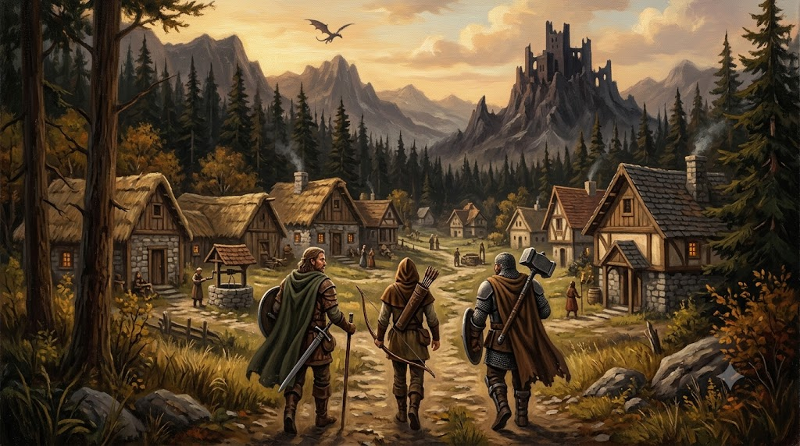
Тихе село на краю королівства — серце життя героїв. Тут є крамниця, ринок, арена, цілитель і дошка завдань.
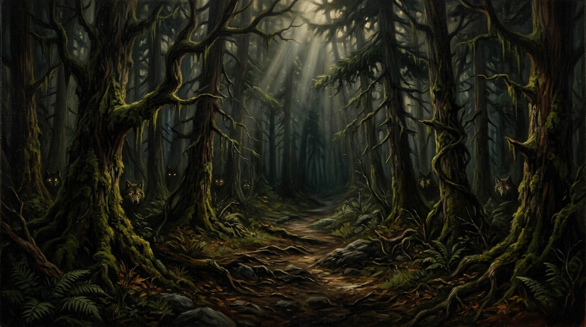
Прадавні дерева затуляють сонце. Між стовбурами нишпорять вовки, кабани та гобліни-розвідники.
| Монстр | Рів. | ❤️ HP | ⚔️ Атака | ✨ Досвід | 🪙 Срібло | 🎁 Дроп |
|---|---|---|---|---|---|---|
| Лісовий вовк | 1 | 25 | 5 | 14 | 3–8 | ⚪️ Вовча шкура 45% ⚪️ Мале зілля зцілення 10% 🔵 Самоцвіт 2% |
| Дикий кабан | 2 | 38 | 7 | 20 | 5–12 | ⚪️ Ікло кабана 40% ⚪️ Мале зілля зцілення 10% 🔵 Самоцвіт 2% |
| Лісовий павук | 3 | 45 | 9 | 27 | 7–15 | 🟢 Павучий шовк 35% ⚪️ Дерев'яний кийок 6% 🔵 Самоцвіт 2% |
| Гоблін-розвідник | 4 | 55 | 11 | 35 | 10–22 | ⚪️ Вухо гобліна 50% ⚪️ Мисливський лук 5% 🔵 Самоцвіт 2% |
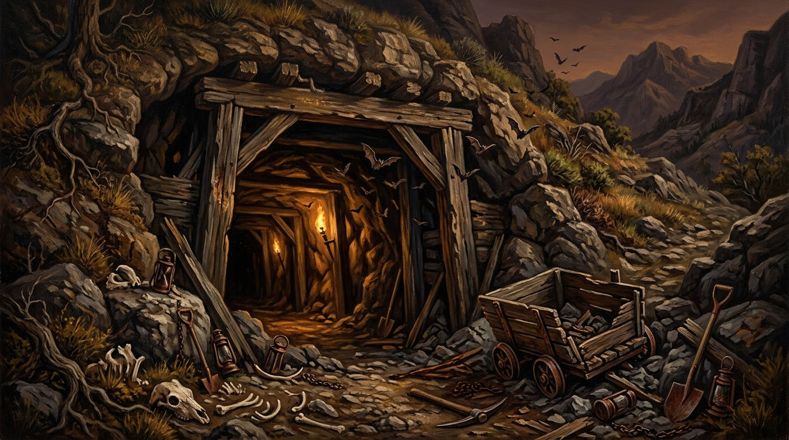
Покинуті шахти, де тепер хазяйнують гобліни та нежить. Кажуть, у глибині живе троль.
| Монстр | Рів. | ❤️ HP | ⚔️ Атака | ✨ Досвід | 🪙 Срібло | 🎁 Дроп |
|---|---|---|---|---|---|---|
| Печерний кажан | 4 | 50 | 12 | 34 | 8–18 | ⚪️ Крило кажана 50% 🔵 Самоцвіт 3% |
| Гоблін-воїн | 5 | 70 | 14 | 45 | 12–26 | ⚪️ Вухо гобліна 50% ⚪️ Залізний меч 6% 🔵 Самоцвіт 3% |
| Скелет | 6 | 85 | 16 | 55 | 15–30 | 🟢 Кістяний пил 45% 🟢 Кольчуга 4% 🔵 Самоцвіт 3% |
| Печерний троль | 8 | 130 | 20 | 85 | 25–50 | 🔵 Шкура троля 40% 🟢 Сталева сокира 7% 🟢 Середнє зілля зцілення 15% 🔵 Самоцвіт 3% |
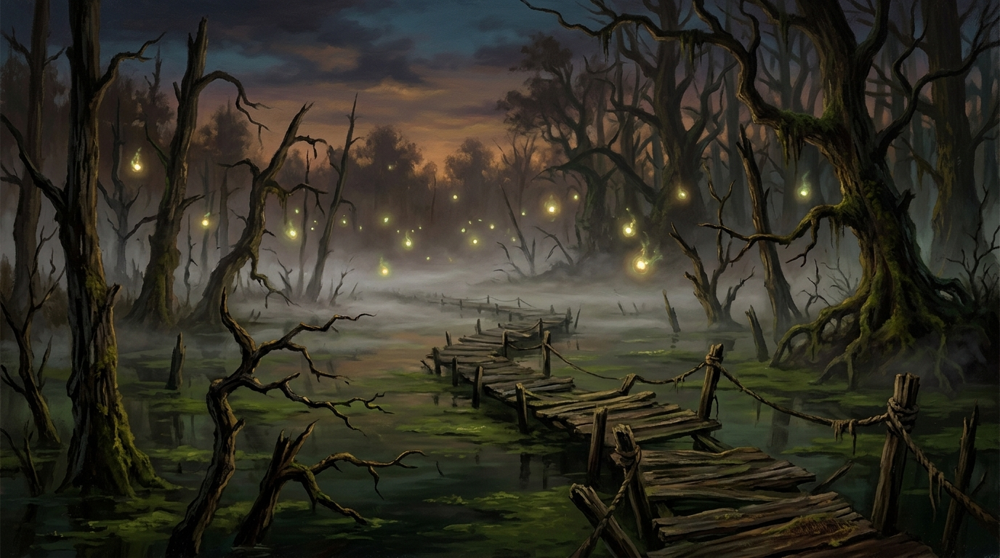
Туман, трясовина й запах гнилі. Тут зникають навіть досвідчені мандрівники — а ті, хто повертається, приносять цінну есенцію.
| Монстр | Рів. | ❤️ HP | ⚔️ Атака | ✨ Досвід | 🪙 Срібло | 🎁 Дроп |
|---|---|---|---|---|---|---|
| Гігантська п'явка | 8 | 110 | 19 | 75 | 18–38 | ⚪️ Слиз п'явки 50% 🔵 Самоцвіт 3% |
| Упир | 10 | 150 | 24 | 100 | 25–55 | 🟢 Кіготь упиря 45% 🟢 Срібна шабля 5% 🔵 Самоцвіт 3% |
| Болотна відьма | 11 | 160 | 28 | 120 | 30–65 | 🔵 Болотна есенція 35% 🔵 Велике зілля зцілення 12% 🔵 Самоцвіт 3% |
| Болотний жах | 13 | 220 | 32 | 160 | 45–90 | 🔵 Болотна есенція 50% 🔵 Клинок лицаря 5% 🔵 Самоцвіт 3% |
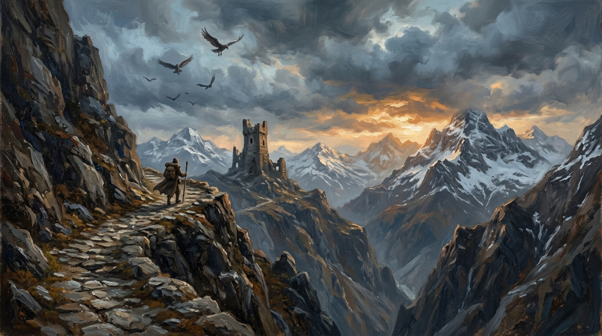
Крижаний вітер і прямовисні скелі. На перевалі полюють гарпії, а з каменю здіймаються прадавні големи.
| Монстр | Рів. | ❤️ HP | ⚔️ Атака | ✨ Досвід | 🪙 Срібло | 🎁 Дроп |
|---|---|---|---|---|---|---|
| Гірський вовк | 13 | 200 | 33 | 150 | 40–80 | ⚪️ Вовча шкура 60% 🟢 Середнє зілля зцілення 15% 🔵 Самоцвіт 4% |
| Гарпія | 14 | 220 | 37 | 175 | 45–95 | 🟢 Перо гарпії 50% 🟢 Лускатий обладунок 5% 🔵 Самоцвіт 4% |
| Кам'яний голем | 16 | 300 | 40 | 220 | 60–120 | 🔵 Ядро голема 35% 🔵 Бойовий молот 5% 🔵 Самоцвіт 4% |
| Огр | 18 | 360 | 48 | 280 | 80–160 | 🟢 Зуб огра 50% 🔵 Латний обладунок 5% 🔵 Велике зілля зцілення 15% 🔵 Самоцвіт 4% |
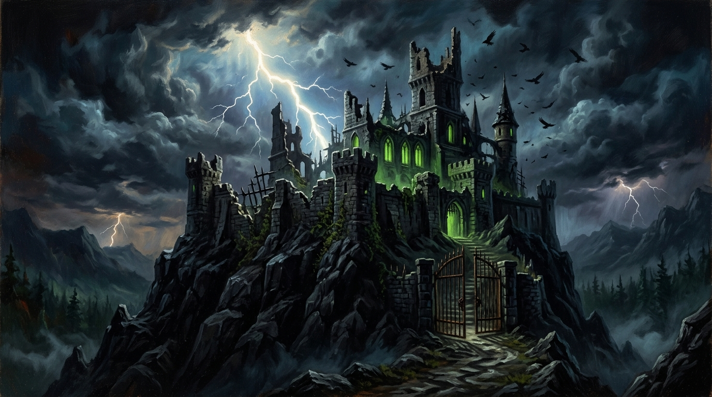
Резиденція полеглого лорда-вампіра. Лише найсильніші герої наважуються увійти в ці ворота.
| Монстр | Рів. | ❤️ HP | ⚔️ Атака | ✨ Досвід | 🪙 Срібло | 🎁 Дроп |
|---|---|---|---|---|---|---|
| Проклятий лицар | 19 | 380 | 52 | 320 | 90–180 | 🔵 Проклята емблема 45% 🔵 Клинок лицаря 8% 🔵 Самоцвіт 5% |
| Привид | 21 | 420 | 60 | 380 | 100–210 | 🔵 Проклята емблема 50% 🟣 Кинджал тіней 4% 🔵 Самоцвіт 5% |
| Горгулья | 23 | 500 | 65 | 450 | 120–240 | 🟣 Уламок кристала 30% 🟣 Зачарована мантія 4% 🔵 Самоцвіт 5% |
| Лорд-вампір | 25 | 600 | 75 | 600 | 160–320 | 🟣 Ікло вампіра 40% 🟣 Полум'яний меч 5% 🟠 Стародавня реліквія 2% 🔵 Самоцвіт 5% |
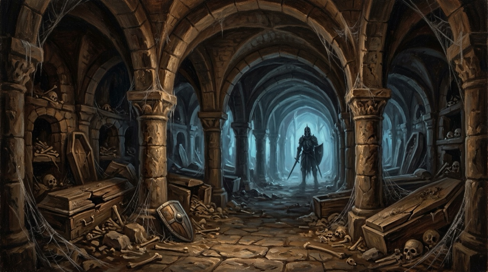
Під старим цвинтарем тягнуться нескінченні галереї. Шурхотить могильний прах, а в темряві гримлять кістки давно полеглих лицарів.
| Монстр | Рів. | ❤️ HP | ⚔️ Атака | ✨ Досвід | 🪙 Срібло | 🎁 Дроп |
|---|---|---|---|---|---|---|
| Упир склепу | 26 | 680 | 78 | 700 | 180–360 | ⚪️ Могильний прах 50% 🔵 Велике зілля зцілення 8% 🔵 Самоцвіт 6% |
| Кістяний лицар | 28 | 780 | 84 | 820 | 210–420 | ⚪️ Могильний прах 40% 🟢 Кістка ліча 25% 🟣 Кістяний обладунок 4% 🔵 Самоцвіт 6% |
| Могильний привид | 29 | 850 | 88 | 900 | 230–460 | 🟢 Кістка ліча 45% 🟣 Обсидіановий клинок 4% 🔵 Самоцвіт 6% |
| Прислужник ліча | 31 | 950 | 93 | 1050 | 260–520 | 🟢 Кістка ліча 50% 🟣 Обсидіановий клинок 5% 🔵 Велике зілля зцілення 12% 🔵 Самоцвіт 6% |
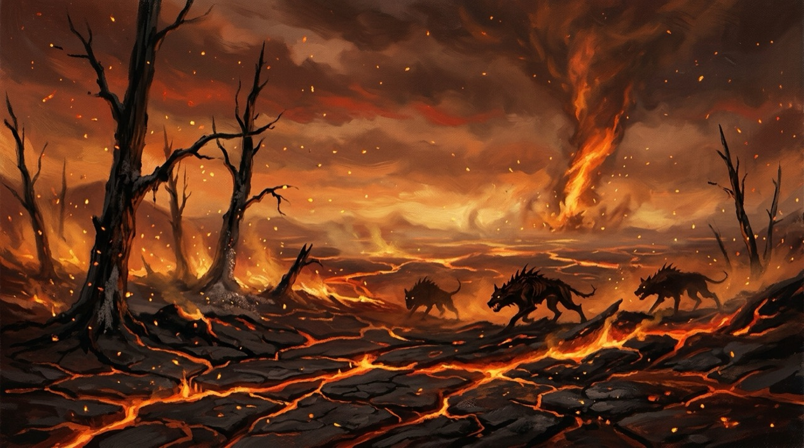
Випалена дощенту земля дихає жаром. Серед попелу нишпорять гончі, а з тріщин виривається підземне полум'я.
| Монстр | Рів. | ❤️ HP | ⚔️ Атака | ✨ Досвід | 🪙 Срібло | 🎁 Дроп |
|---|---|---|---|---|---|---|
| Попеляста гонча | 32 | 1050 | 96 | 1150 | 280–560 | 🟢 Тліючий уламок 50% 🔵 Самоцвіт 7% |
| Вогняний біс | 34 | 1200 | 102 | 1350 | 310–620 | 🟢 Тліючий уламок 45% 🔵 Ріг демона 20% 🟣 Величне зілля зцілення 5% 🔵 Самоцвіт 7% |
| Магмовий голем | 36 | 1300 | 108 | 1550 | 340–680 | 🔵 Ріг демона 35% 🟣 Пекельна кольчуга 4% 🔵 Самоцвіт 7% |
| Полум'яний джин | 38 | 1350 | 114 | 1800 | 380–760 | 🔵 Ріг демона 45% 🟣 Демонічний тесак 5% 🔵 Самоцвіт 7% |
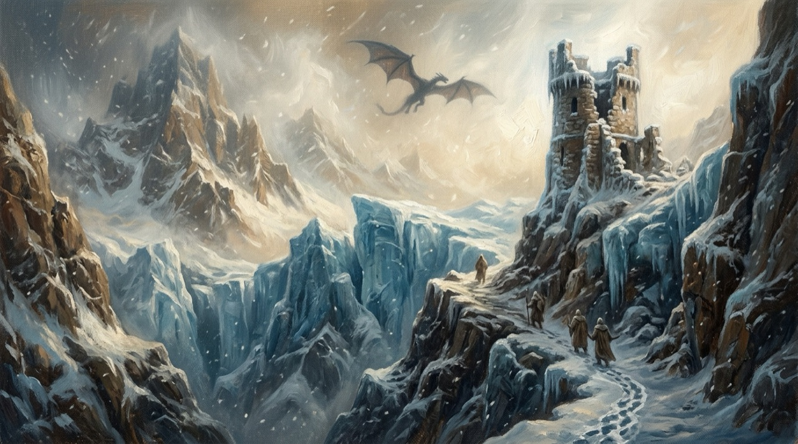
Вічна хуртовина виє між крижаними скелями. Мороз пробирає до кісток, а в білій імлі миготять крилаті тіні.
| Монстр | Рів. | ❤️ HP | ⚔️ Атака | ✨ Досвід | 🪙 Срібло | 🎁 Дроп |
|---|---|---|---|---|---|---|
| Морозний вовк | 39 | 1500 | 117 | 2000 | 420–840 | 🟢 Вічний лід 50% 🟣 Величне зілля зцілення 6% 🔵 Самоцвіт 8% |
| Крижана тінь | 41 | 1650 | 123 | 2250 | 460–920 | 🟢 Вічний лід 45% 🟠 Льодовикова броня 4% 🔵 Самоцвіт 8% |
| Сніговий троль | 42 | 1750 | 126 | 2450 | 500–1000 | 🟢 Вічний лід 40% 🟠 Сокира вічної зими 5% 🔵 Самоцвіт 8% |
| Крижана виверна | 44 | 1900 | 132 | 2750 | 550–1100 | 🔵 Луска виверни 50% 🟠 Льодовикова броня 4% 🔵 Самоцвіт 8% |
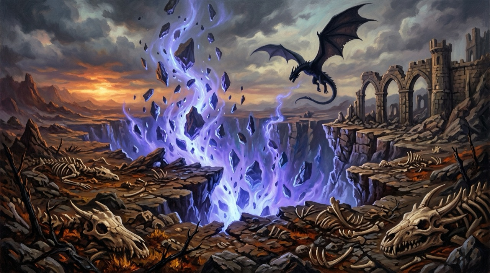
Розколота земля, з якої сочиться прадавня магія. Тут гніздяться дракони — і лише найвеличніші герої повертаються звідси живими.
| Монстр | Рів. | ❤️ HP | ⚔️ Атака | ✨ Досвід | 🪙 Срібло | 🎁 Дроп |
|---|---|---|---|---|---|---|
| Сталкер розламу | 45 | 2100 | 135 | 3000 | 600–1200 | 🔵 Драконяча кров 40% 🟣 Кристал розламу 12% 🔵 Самоцвіт 10% |
| Юний дрейк | 47 | 2300 | 141 | 3400 | 650–1300 | 🔵 Драконяча кров 45% 🔵 Луска виверни 30% 🔵 Самоцвіт 10% |
| Драконів жрець | 48 | 2500 | 144 | 3700 | 700–1400 | 🟣 Кристал розламу 30% 🟠 Клинок Володаря драконів 2% 🟣 Величне зілля зцілення 10% 🔵 Самоцвіт 10% |
| Прадавній дракон | 50 | 2900 | 150 | 4300 | 800–1600 | 🔵 Драконяча кров 50% 🟣 Кристал розламу 25% 🟠 Клинок Володаря драконів 3% 🟠 Лати Володаря драконів 3% 🔵 Самоцвіт 12% |
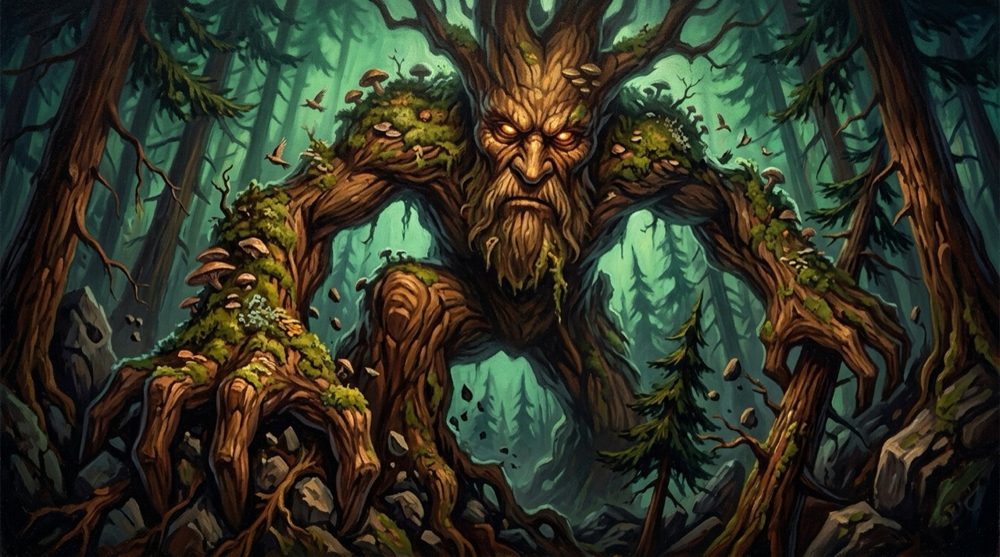
💰 Спільна нагорода: 🪙 1 500 + ✨ 2 000 — ділиться за завданою шкодою
🏆 Трофеї топ-3 за шкодою:
1. 🟢 Сталева сокира
2. 🔵 Велике зілля зцілення
3. 🟢 Середнє зілля зцілення
Самоцвіти топ-3: 💎 3 / 2 / 1
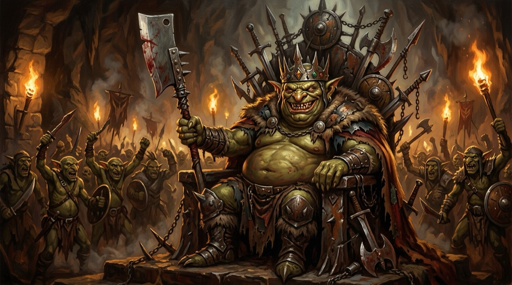
💰 Спільна нагорода: 🪙 3 000 + ✨ 4 500 — ділиться за завданою шкодою
🏆 Трофеї топ-3 за шкодою:
1. 🔵 Клинок лицаря
2. 🟢 Кольчуга
3. 🔵 Велике зілля зцілення
Самоцвіти топ-3: 💎 3 / 2 / 1
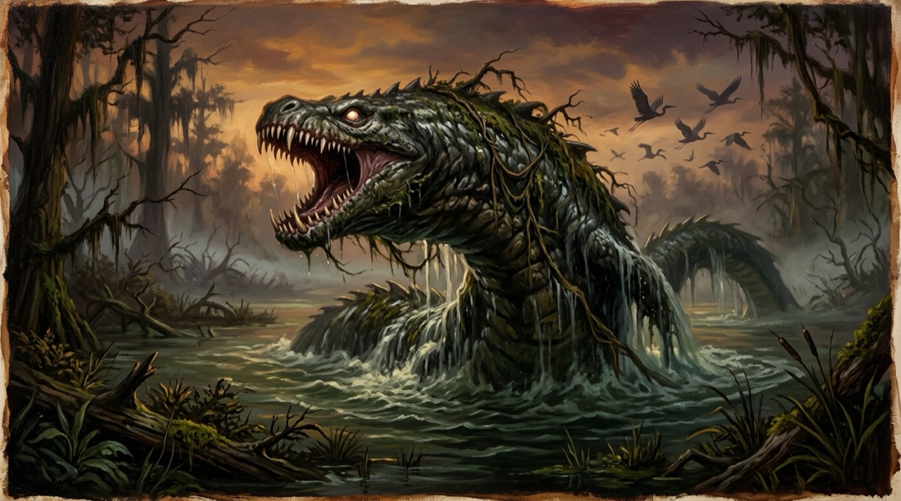
💰 Спільна нагорода: 🪙 6 000 + ✨ 9 000 — ділиться за завданою шкодою
🏆 Трофеї топ-3 за шкодою:
1. 🔵 Бойовий молот
2. 🔵 Латний обладунок
3. 🟢 Срібна шабля
Самоцвіти топ-3: 💎 3 / 2 / 1
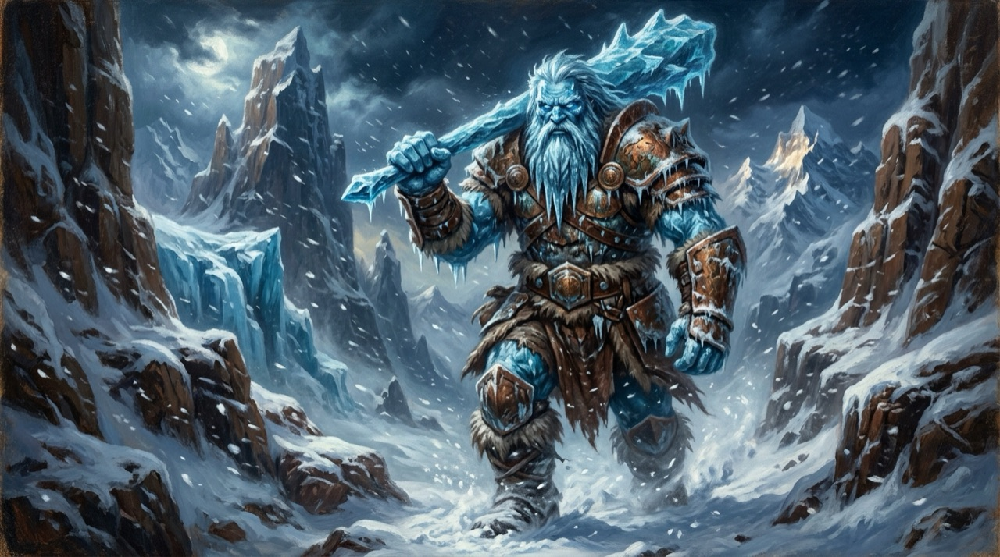
💰 Спільна нагорода: 🪙 10 000 + ✨ 16 000 — ділиться за завданою шкодою
🏆 Трофеї топ-3 за шкодою:
1. 🟣 Полум'яний меч
2. 🟣 Зачарована мантія
3. 🔵 Бойовий молот
Самоцвіти топ-3: 💎 3 / 2 / 1
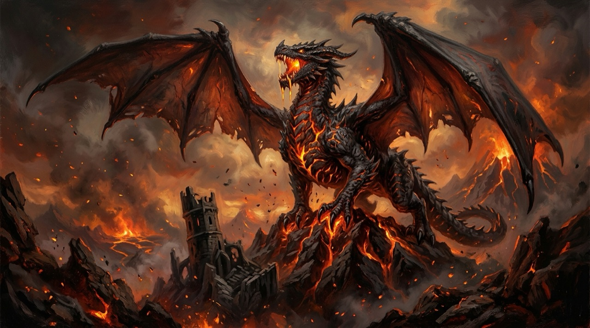
💰 Спільна нагорода: 🪙 20 000 + ✨ 30 000 — ділиться за завданою шкодою
🏆 Трофеї топ-3 за шкодою:
1. 🟠 Драконобій
2. 🟠 Обладунок з драконячої луски
3. 🟣 Кинджал тіней
Самоцвіти топ-3: 💎 3 / 2 / 1
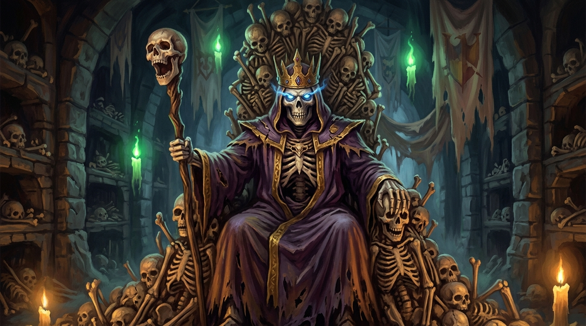
💰 Спільна нагорода: 🪙 32 000 + ✨ 50 000 — ділиться за завданою шкодою
🏆 Трофеї топ-3 за шкодою:
1. 🟣 Обсидіановий клинок
2. 🟣 Кістяний обладунок
3. 🟣 Величне зілля зцілення
Самоцвіти топ-3: 💎 3 / 2 / 1
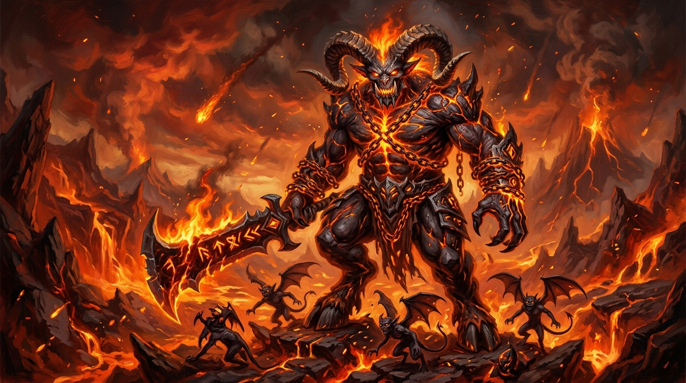
💰 Спільна нагорода: 🪙 50 000 + ✨ 80 000 — ділиться за завданою шкодою
🏆 Трофеї топ-3 за шкодою:
1. 🟣 Демонічний тесак
2. 🟣 Пекельна кольчуга
3. 🟣 Величне зілля зцілення
Самоцвіти топ-3: 💎 3 / 2 / 1
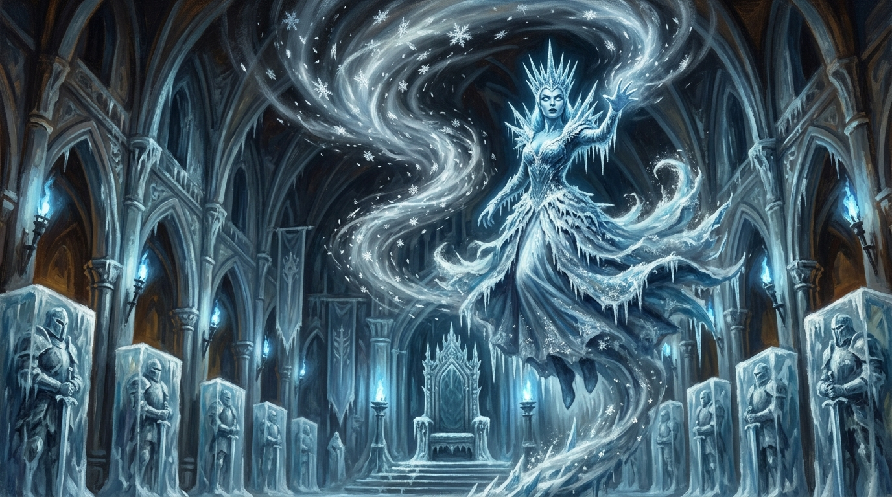
💰 Спільна нагорода: 🪙 75 000 + ✨ 125 000 — ділиться за завданою шкодою
🏆 Трофеї топ-3 за шкодою:
1. 🟠 Сокира вічної зими
2. 🟠 Льодовикова броня
3. 🟣 Величне зілля зцілення
Самоцвіти топ-3: 💎 3 / 2 / 1
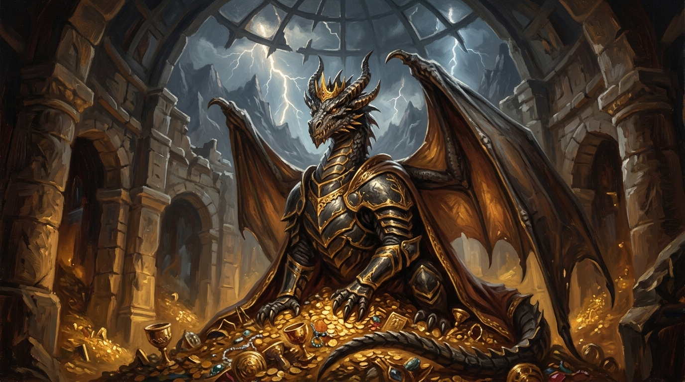
💰 Спільна нагорода: 🪙 120 000 + ✨ 200 000 — ділиться за завданою шкодою
🏆 Трофеї топ-3 за шкодою:
1. 🟠 Клинок Володаря драконів
2. 🟠 Лати Володаря драконів
3. 🟣 Кристал розламу
Самоцвіти топ-3: 💎 3 / 2 / 1
⏳ Наступний бос — через 30 хв після перемоги
| Предмет | Характеристика | 🪙 Ціна | Де здобути |
|---|---|---|---|
| ⚪️ Іржавий меч | ⚔️ Атака +2 | 15 | 🛒 крамниця |
| ⚪️ Дерев'яний кийок | ⚔️ Атака +3 | 25 | Лісовий павук 6% · 🛒 крамниця |
| ⚪️ Мисливський лук | ⚔️ Атака +4 | 45 | Гоблін-розвідник 5% · 🛒 крамниця |
| ⚪️ Залізний меч | ⚔️ Атака +6 | 90 | Гоблін-воїн 6% · 🛒 крамниця |
| 🟢 Сталева сокира | ⚔️ Атака +9 | 180 | Печерний троль 7% · 🛒 крамниця · 🐲 бос (топ-3) |
| 🟢 Срібна шабля | ⚔️ Атака +12 | 320 | Упир 5% · 🛒 крамниця · 🐲 бос (топ-3) |
| 🔵 Клинок лицаря | ⚔️ Атака +16 | 650 | Болотний жах 5% · Проклятий лицар 8% · 🐲 бос (топ-3) |
| 🔵 Бойовий молот | ⚔️ Атака +20 | 1000 | Кам'яний голем 5% · 🐲 бос (топ-3) |
| 🟣 Полум'яний меч | ⚔️ Атака +26 | 2200 | Лорд-вампір 5% · 🐲 бос (топ-3) |
| 🟣 Кинджал тіней | ⚔️ Атака +30 | 3200 | Привид 4% · 🐲 бос (топ-3) |
| 🟠 Драконобій | ⚔️ Атака +40 | 8000 | 🐲 бос (топ-3) |
| 🟣 Обсидіановий клинок | ⚔️ Атака +50 | 14000 | Могильний привид 4% · Прислужник ліча 5% · 🐲 бос (топ-3) |
| 🟣 Демонічний тесак | ⚔️ Атака +62 | 24000 | Полум'яний джин 5% · 🐲 бос (топ-3) |
| 🟠 Сокира вічної зими | ⚔️ Атака +75 | 38000 | Сніговий троль 5% · 🐲 бос (топ-3) |
| 🟠 Клинок Володаря драконів | ⚔️ Атака +90 | 65000 | Драконів жрець 2% · Прадавній дракон 3% · 🐲 бос (топ-3) |
| Предмет | Характеристика | 🪙 Ціна | Де здобути |
|---|---|---|---|
| ⚪️ Полотняна сорочка | 🛡 Захист +1 | 12 | 🛒 крамниця |
| ⚪️ Шкіряний обладунок | 🛡 Захист +3 | 60 | 🛒 крамниця |
| 🟢 Кольчуга | 🛡 Захист +6 | 200 | Скелет 4% · 🛒 крамниця · 🐲 бос (топ-3) |
| 🟢 Лускатий обладунок | 🛡 Захист +8 | 380 | Гарпія 5% · 🛒 крамниця |
| 🔵 Латний обладунок | 🛡 Захист +12 | 800 | Огр 5% · 🐲 бос (топ-3) |
| 🟣 Зачарована мантія | 🛡 Захист +16 | 2500 | Горгулья 4% · 🐲 бос (топ-3) |
| 🟠 Обладунок з драконячої луски | 🛡 Захист +24 | 9000 | 🐲 бос (топ-3) |
| 🟣 Кістяний обладунок | 🛡 Захист +30 | 14000 | Кістяний лицар 4% · 🐲 бос (топ-3) |
| 🟣 Пекельна кольчуга | 🛡 Захист +37 | 23000 | Магмовий голем 4% · 🐲 бос (топ-3) |
| 🟠 Льодовикова броня | 🛡 Захист +45 | 36000 | Крижана тінь 4% · Крижана виверна 4% · 🐲 бос (топ-3) |
| 🟠 Лати Володаря драконів | 🛡 Захист +54 | 60000 | Прадавній дракон 3% · 🐲 бос (топ-3) |
| Предмет | Характеристика | 🪙 Ціна | Де здобути |
|---|---|---|---|
| ⚪️ Мале зілля зцілення | ❤️ Лікує 30 | 10 | Лісовий вовк 10% · Дикий кабан 10% · 🛒 крамниця |
| 🟢 Середнє зілля зцілення | ❤️ Лікує 90 | 35 | Печерний троль 15% · Гірський вовк 15% · 🛒 крамниця · ⚗️ алхімік · 🐲 бос (топ-3) |
| 🔵 Велике зілля зцілення | ❤️ Лікує 250 | 110 | Болотна відьма 12% · Огр 15% · Упир склепу 8% · Прислужник ліча 12% · 🛒 крамниця · ⚗️ алхімік · 🐲 бос (топ-3) |
| 🟣 Величне зілля зцілення | ❤️ Лікує 600 | 300 | Вогняний біс 5% · Морозний вовк 6% · Драконів жрець 10% · 🛒 крамниця · ⚗️ алхімік · 🐲 бос (топ-3) |
| 🟢 Зілля сили | +25% атаки на 5 боїв (крім арени) | 60 | 🛒 крамниця · ⚗️ алхімік |
| 🟢 Зілля кам'яної шкіри | +25% захисту на 5 боїв (крім арени) | 60 | 🛒 крамниця · ⚗️ алхімік |
| 🔵 Зілля люті | шанс криту 25% на 5 боїв (крім арени) | 90 | 🛒 крамниця · ⚗️ алхімік |
| Предмет | Характеристика | 🪙 Ціна | Де здобути |
|---|---|---|---|
| 🔵 Самоцвіт | — | 40 | Лісовий вовк 2% · Дикий кабан 2% · Лісовий павук 2% · Гоблін-розвідник 2% · Печерний кажан 3% · Гоблін-воїн 3% · Скелет 3% · Печерний троль 3% · Гігантська п'явка 3% · Упир 3% · Болотна відьма 3% · Болотний жах 3% · Гірський вовк 4% · Гарпія 4% · Кам'яний голем 4% · Огр 4% · Проклятий лицар 5% · Привид 5% · Горгулья 5% · Лорд-вампір 5% · Упир склепу 6% · Кістяний лицар 6% · Могильний привид 6% · Прислужник ліча 6% · Попеляста гонча 7% · Вогняний біс 7% · Магмовий голем 7% · Полум'яний джин 7% · Морозний вовк 8% · Крижана тінь 8% · Сніговий троль 8% · Крижана виверна 8% · Сталкер розламу 10% · Юний дрейк 10% · Драконів жрець 10% · Прадавній дракон 12% · ⚗️ алхімік · 🐲 бос (топ-3) → ⚒️ заточування в коваля |
| ⚪️ Вовча шкура | — | 6 | Лісовий вовк 45% · Гірський вовк 60% → ⚗️ рецепти алхіміка |
| ⚪️ Ікло кабана | — | 7 | Дикий кабан 40% → ⚗️ рецепти алхіміка |
| 🟢 Павучий шовк | — | 14 | Лісовий павук 35% → ⚗️ рецепти алхіміка |
| ⚪️ Вухо гобліна | — | 5 | Гоблін-розвідник 50% · Гоблін-воїн 50% |
| ⚪️ Крило кажана | — | 8 | Печерний кажан 50% → ⚗️ рецепти алхіміка |
| 🟢 Кістяний пил | — | 18 | Скелет 45% → ⚗️ рецепти алхіміка |
| 🔵 Шкура троля | — | 60 | Печерний троль 40% → ⚗️ рецепти алхіміка |
| ⚪️ Слиз п'явки | — | 10 | Гігантська п'явка 50% → ⚗️ рецепти алхіміка |
| 🟢 Кіготь упиря | — | 25 | Упир 45% → ⚗️ рецепти алхіміка |
| 🔵 Болотна есенція | — | 70 | Болотна відьма 35% · Болотний жах 50% → ⚗️ рецепти алхіміка |
| 🟢 Перо гарпії | — | 30 | Гарпія 50% |
| 🔵 Ядро голема | — | 90 | Кам'яний голем 35% |
| 🟢 Зуб огра | — | 35 | Огр 50% |
| 🔵 Проклята емблема | — | 120 | Проклятий лицар 45% · Привид 50% |
| 🟣 Ікло вампіра | — | 250 | Лорд-вампір 40% |
| 🟣 Уламок кристала | — | 300 | Горгулья 30% |
| 🟠 Стародавня реліквія | — | 1000 | Лорд-вампір 2% |
| ⚪️ Могильний прах | — | 22 | Упир склепу 50% · Кістяний лицар 40% → ⚗️ рецепти алхіміка |
| 🟢 Кістка ліча | — | 45 | Кістяний лицар 25% · Могильний привид 45% · Прислужник ліча 50% → ⚗️ рецепти алхіміка |
| 🟢 Тліючий уламок | — | 60 | Попеляста гонча 50% · Вогняний біс 45% → ⚗️ рецепти алхіміка |
| 🔵 Ріг демона | — | 110 | Вогняний біс 20% · Магмовий голем 35% · Полум'яний джин 45% → ⚗️ рецепти алхіміка |
| 🟢 Вічний лід | — | 90 | Морозний вовк 50% · Крижана тінь 45% · Сніговий троль 40% → ⚗️ рецепти алхіміка |
| 🔵 Луска виверни | — | 160 | Крижана виверна 50% · Юний дрейк 30% → ⚗️ рецепти алхіміка |
| 🔵 Драконяча кров | — | 220 | Сталкер розламу 40% · Юний дрейк 45% · Прадавній дракон 50% → ⚗️ рецепти алхіміка |
| 🟣 Кристал розламу | — | 400 | Сталкер розламу 12% · Драконів жрець 30% · Прадавній дракон 25% · 🐲 бос (топ-3) → ⚗️ рецепти алхіміка |
Коваль на ринковій площі гострить екіпіровану зброю та броню — до +12. Кожен рівень заточування дає +4% до характеристики предмета (мінімум +1 за кожні 3 рівні).
Вартість спроби: срібло (12% ціни предмета × цільовий рівень) + самоцвіти 💎.
⚠️ До +6 — безпечно. З +7 провал знижує заточування на 1 рівень (срібло та самоцвіти згорають).
| Заточування | 💎 Самоцвіти | 🎯 Шанс | У разі провалу |
|---|---|---|---|
| +1 | 1 | 100% | — |
| +2 | 1 | 100% | — |
| +3 | 1 | 100% | — |
| +4 | 2 | 100% | — |
| +5 | 2 | 100% | — |
| +6 | 2 | 100% | — |
| +7 | 3 | 80% | −1 рівень |
| +8 | 3 | 70% | −1 рівень |
| +9 | 3 | 60% | −1 рівень |
| +10 | 4 | 50% | −1 рівень |
| +11 | 4 | 40% | −1 рівень |
| +12 | 4 | 30% | −1 рівень |
Алхімік на ринковій площі варить зілля з трофеїв ваших полювань — дешевше, ніж купувати готові в крамниці. Бойові зілля діють указану кількість боїв (заряд витрачається на вході в бій, на арені бафи вимкнені).
+25% атаки на 5 боїв (крім арени)
Інгредієнти:
⚪️ Вовча шкура ×2
⚪️ Ікло кабана ×1
💰 Робота: 25 🪙
+25% захисту на 5 боїв (крім арени)
Інгредієнти:
🟢 Кістяний пил ×2
⚪️ Крило кажана ×2
💰 Робота: 25 🪙
шанс криту 25% на 5 боїв (крім арени)
Інгредієнти:
🟢 Павучий шовк ×1
🟢 Кіготь упиря ×1
💰 Робота: 40 🪙
❤️ Лікує 90
Інгредієнти:
⚪️ Слиз п'явки ×2
💰 Робота: 10 🪙
❤️ Лікує 250
Інгредієнти:
🔵 Болотна есенція ×1
🔵 Шкура троля ×1
💰 Робота: 30 🪙
❤️ Лікує 600
Інгредієнти:
🔵 Драконяча кров ×1
🟢 Вічний лід ×1
💰 Робота: 60 🪙
+25% атаки на 5 боїв (крім арени)
Інгредієнти:
⚪️ Могильний прах ×2
🔵 Ріг демона ×1
💰 Робота: 60 🪙
+25% захисту на 5 боїв (крім арени)
Інгредієнти:
🟢 Кістка ліча ×2
🟢 Вічний лід ×1
💰 Робота: 60 🪙
шанс криту 25% на 5 боїв (крім арени)
Інгредієнти:
🟢 Тліючий уламок ×2
🔵 Луска виверни ×1
💰 Робота: 90 🪙
—
Інгредієнти:
🟣 Кристал розламу ×1
💰 Робота: 100 🪙
Досвід дають перемоги над монстрами, завдання та світовий бос. За кожен рівень: +3 очки характеристик (⚔️ сила / 🛡 захист / ❤️ живучість) і +5 до макс. HP. Здоров’я повністю відновлюється з новим рівнем.
Поза боєм HP відновлюється саме: 1 HP кожні 20 секунд. Цілитель у селі лікує повністю за срібло (5 🪙 × ваш рівень).
Програш у PvE: ви отямлюєтеся в селі з 30% HP і втрачаєте 10% срібла. На арені здоров’я не витрачається — бої тренувальні.
PvP за рейтингом (±5 рівнів): перемога +25 рейтингу і срібло, поразка −20. Бафи алхіміка на арені не діють.
Спільний ворог усіх гравців. Нагорода ділиться пропорційно завданій шкоді, топ-3 отримують рідкісні трофеї та самоцвіти. Новий бос — через 30 хвилин після перемоги.
Крамниця купує речі за пів ціни. На ринковій площі можна виставити лот для інших гравців — ціну обираєте самі.
Кнопка «Ідея» у профілі — пропозиції потрапляють напряму розробникам. Найкращі ідеї гравців уже в грі!
| Рівень | Потрібно досвіду |
|---|---|
| 1 | 100 |
| 2 | 263 |
| 3 | 465 |
| 5 | 951 |
| 8 | 1 837 |
| 10 | 2 511 |
| 15 | 4 431 |
| 20 | 6 628 |
| 25 | 9 059 |
| 30 | 11 694 |
| 40 | 17 493 |
| 50 | 23 908 |